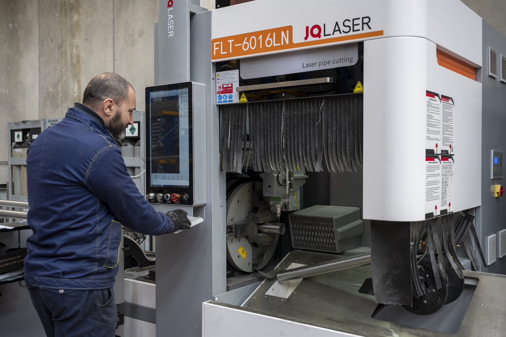
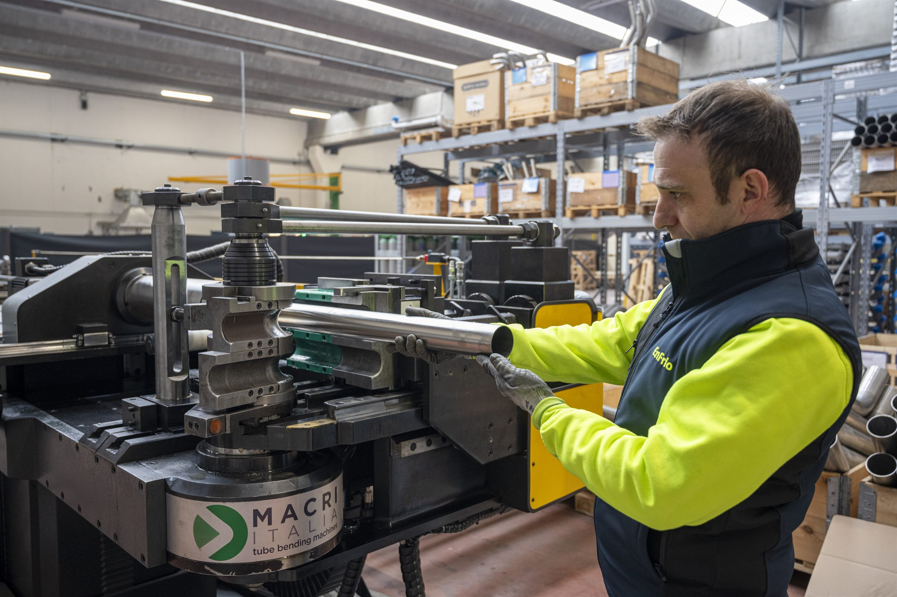
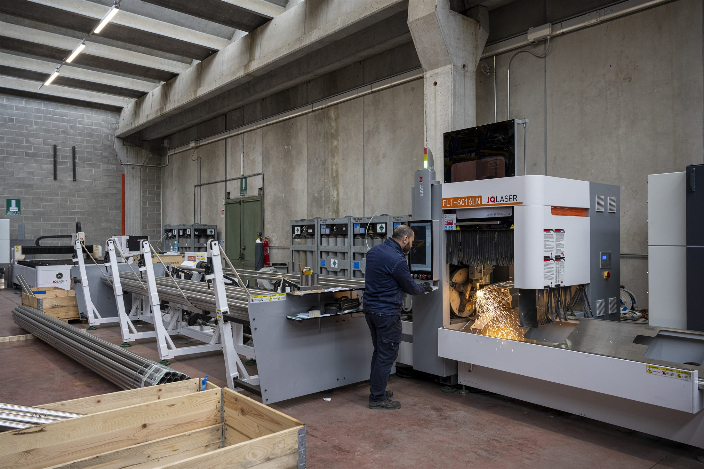
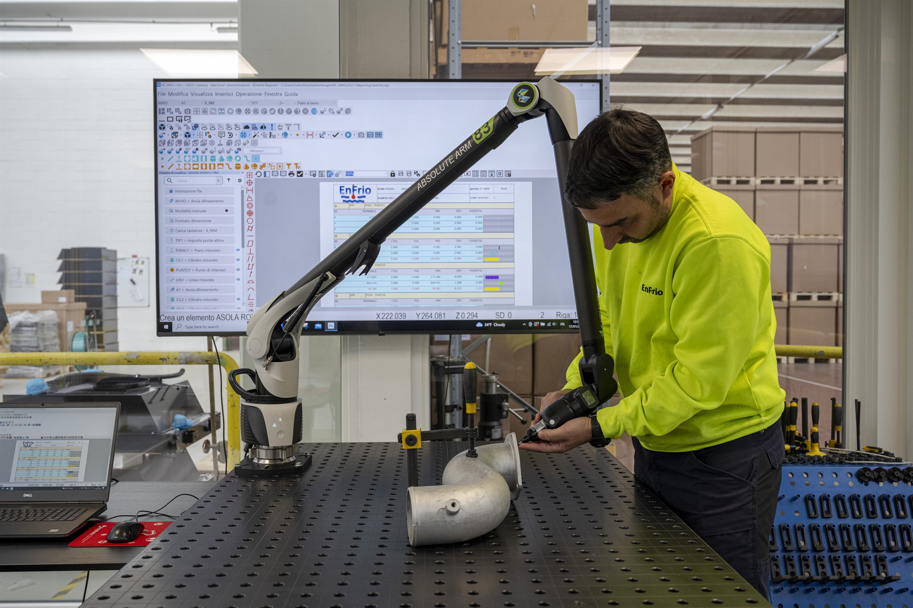
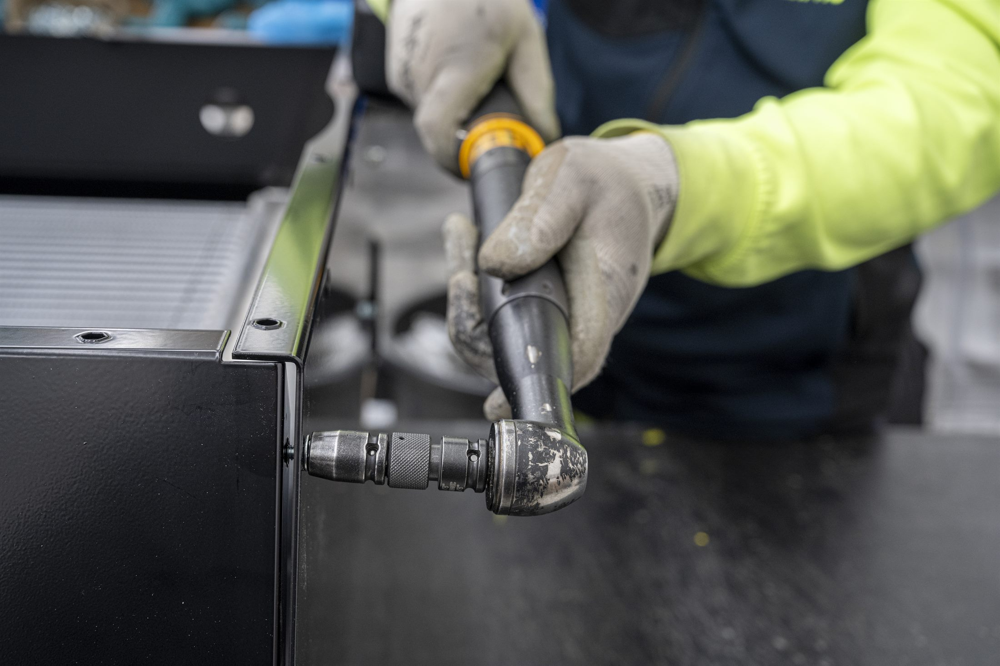
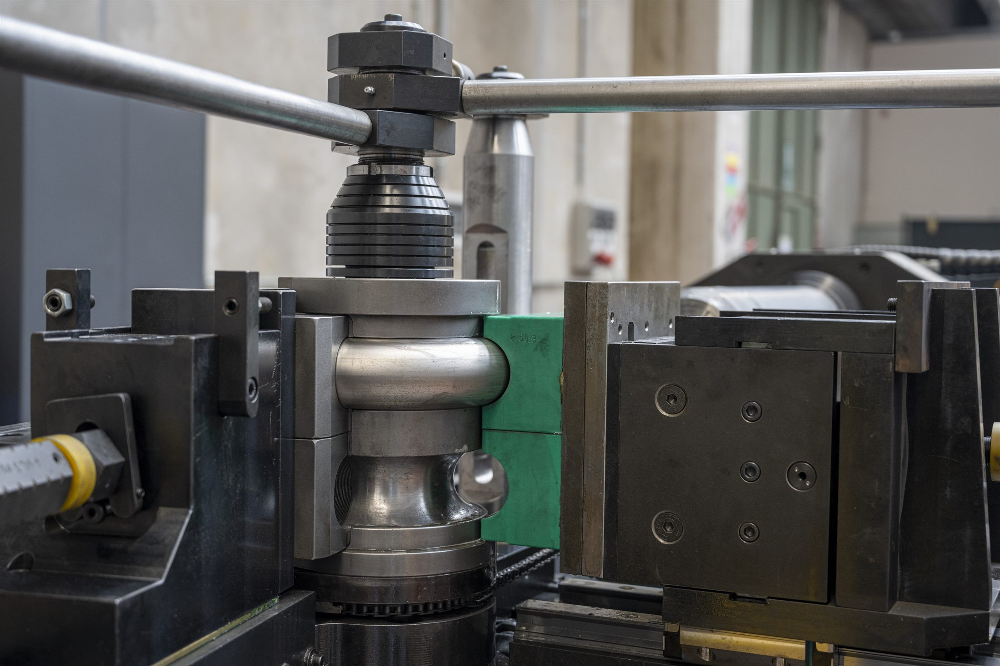
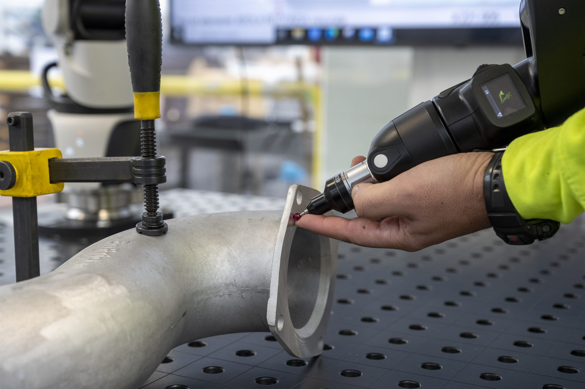
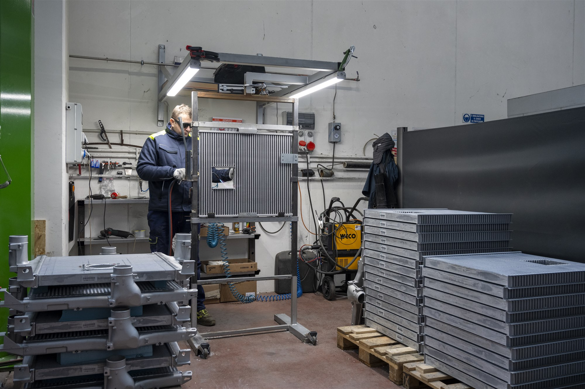

6-Axis Tube Bending
New 6-axis bending cell for stainless tubes up to key best-seller standards, supporting compact and complex routing.
PROCESS EXCELLENCE
Technology at Enfrio is built around repeatability: controlled process windows, traceable checks and reliable industrial throughput.

CAPABILITY FLOW
New 6-axis bending cell for stainless tubes up to key best-seller standards, supporting compact and complex routing.
Dedicated laser operations for radiator components, expansion tanks and structural motor fixation frames.
3D Catia and PLM routines linked with Hexagon CMM to secure dimensional control across bending and laser workflows.
Final assembly is driven by repeatable process logic, traceability checkpoints and serial-readiness criteria.




MACHINERY DETAIL



NEXT MEDIA LAYER
The current structure is designed to integrate your upcoming process videos without changing layout architecture.